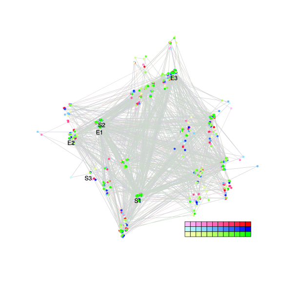
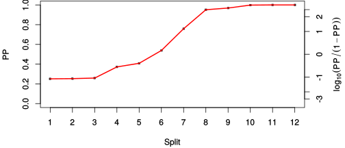
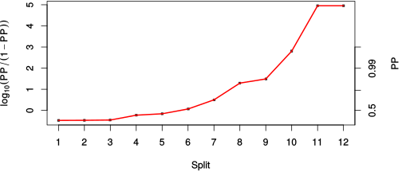

| chain # | burnin | subsample | Iterations (remaining) | command line | subdirectory | directory |
|---|---|---|---|---|---|---|
| 1 | 10000 | 1 | 90000 | /usr/local/bali-phy-3.0-beta2/bin/bali-phy E5_blue_clade_aa.fas -s 35613 -S LG -n E5_blue_aa | E5_blue_aa-1 | /home/willemse/data/trees/BaliPhy/all_E5_aa |
| 2 | 10000 | 1 | 90000 | /usr/local/bali-phy-3.0-beta2/bin/bali-phy E5_blue_clade_aa.fas -s 30378 -S LG -n E5_blue_aa | E5_blue_aa-2 | /home/willemse/data/trees/BaliPhy/all_E5_aa |
| 3 | 10000 | 1 | 90000 | /usr/local/bali-phy-3.0-beta2/bin/bali-phy E5_blue_clade_aa.fas -s 16132 -S LG -n E5_blue_aa | E5_blue_aa-3 | /home/willemse/data/trees/BaliPhy/all_E5_aa |
| P(data|M) = -585.387 +- 0.098 | Complete sample: 1029 topologies | 95% Bayesian credible interval: 205 topologies |
Phylogeny Distribution

| Partition support: Summary |
| Partition support graph: SVG |
{kind=link}
| 50% consensus | Newick (+PP) | SVG | |||||
| 66% consensus | Newick (+PP) | SVG | |||||
| 80% consensus | Newick (+PP) | SVG | |||||
| 90% consensus | Newick (+PP) | SVG | |||||
| 95% consensus | Newick (+PP) | SVG | |||||
| 99% consensus | Newick (+PP) | SVG | |||||
| 100% consensus | Newick (+PP) | SVG | |||||
| MAP | Newick (+PP) | SVG | |||||
| greedy | Newick (+PP) | SVG |
{kind=link}
{kind=link}
{kind=link}
{kind=link}
{kind=link}
{kind=link}
{kind=link}
{kind=link}
Alignment Distribution
Partition 1
| Diff | Min. %identity | # Sites | Constant | Informative | ||||
|---|---|---|---|---|---|---|---|---|
| Initial | FASTA | HTML | Diff | 7.55% | 53 | 1 (1.89%) | 41 (77.4%) | |
| Best (WPD) | FASTA | HTML | AU | 29.2% | 61 | 9 (14.8%) | 37 (60.7%) |
Mixing
{kind=link}
{kind=link}
| burnin (scalar) | ESS (scalar) | ESS (partition) | ASDSF | MSDSF | PSRF-CI80% | PSRF-RCF |
|---|---|---|---|---|---|---|
| 1691 | 1177 | 8672.834 | 0.001 | 0.003 | 1.001 | 1.004 |
Projection of RF distances for the first 3 chains3D | Variation of split PPs across chains |
Scalar variables
| Statistic | Median | 95% BCI | ACT | ESS | burnin | PSRF-CI80% | PSRF-RCF |
|---|---|---|---|---|---|---|---|
| prior | -37.89 | (-57.55, -20.89) | 16.11 | 16759 | 282 | 1 | 0.998 |
| prior_A1 | -55.6 | (-68.16, -51.17) | 5.983 | 45127 | 145 | 1.001 | 0.9972 |
| likelihood | -576.6 | (-586.9, -567.7) | 5.971 | 45218 | 223 | 0.9999 | 1 |
| logp | -614.9 | (-635.2, -596.2) | 15.43 | 17496 | 368 | 1 | 0.9995 |
| Heat.beta | 1 | ||||||
| Scale1 | 2.283 | (1.12, 3.951) | 1.147 | 235359 | 169 | 0.9999 | 0.9997 |
| S1.F.pi.A | 0.02742 | (0.006159, 0.05541) | 8.418 | 32074 | 372 | 1 | 0.9973 |
| S1.F.pi.R | 0.02271 | (0.004383, 0.04886) | 8.62 | 31323 | 332 | 0.9999 | 0.9963 |
| S1.F.pi.N | 0.04722 | (0.01825, 0.08389) | 7.717 | 34987 | 406 | 0.9998 | 1.003 |
| S1.F.pi.D | 0.04364 | (0.01168, 0.08328) | 8.904 | 30322 | 360 | 0.9995 | 1.001 |
| S1.F.pi.C | 0.09659 | (0.05087, 0.1499) | 7.924 | 34073 | 395 | 1 | 0.9982 |
| S1.F.pi.Q | 0.02667 | (0.007149, 0.05294) | 8.536 | 31632 | 187 | 0.9999 | 0.9972 |
| S1.F.pi.E | 0.02968 | (0.007702, 0.05868) | 8.515 | 31709 | 208 | 1 | 1.003 |
| S1.F.pi.G | 0.09514 | (0.04389, 0.1543) | 8.683 | 31094 | 233 | 1 | 0.9996 |
| S1.F.pi.H | 0.02619 | (0.006727, 0.05193) | 8.022 | 33658 | 260 | 0.9999 | 0.9981 |
| S1.F.pi.I | 0.02765 | (0.01077, 0.04924) | 8.085 | 33396 | 504 | 1 | 1.002 |
| S1.F.pi.L | 0.1441 | (0.09352, 0.1997) | 7.553 | 35749 | 230 | 0.9999 | 0.9995 |
| S1.F.pi.K | 0.03079 | (0.008253, 0.0606) | 8.552 | 31571 | 446 | 1 | 0.9984 |
| S1.F.pi.M | 0.03323 | (0.01459, 0.0574) | 24.19 | 11161 | 453 | 0.9999 | 1.002 |
| S1.F.pi.F | 0.1012 | (0.06083, 0.1464) | 7.234 | 37325 | 171 | 0.9999 | 0.9932 |
| S1.F.pi.P | 0.03718 | (0.01018, 0.07408) | 8.215 | 32867 | 580 | 1 | 1.002 |
| S1.F.pi.S | 0.02791 | (0.00728, 0.05539) | 8.236 | 32783 | 327 | 1 | 0.9981 |
| S1.F.pi.T | 0.04417 | (0.01649, 0.08037) | 8.102 | 33324 | 345 | 1 | 0.9974 |
| S1.F.pi.W | 0.03503 | (0.01138, 0.0668) | 7.814 | 34551 | 491 | 1.001 | 0.9986 |
| S1.F.pi.Y | 0.01543 | (0.003054, 0.03328) | 8.717 | 30975 | 415 | 1 | 1.001 |
| S1.F.pi.V | 0.05187 | (0.02397, 0.08595) | 7.707 | 35032 | 299 | 0.9998 | 1.001 |
| I1.RS07.meanIndelLengthMinus1 | 2.427 | (0.734, 5.474) | 2.003 | 134769 | 57 | 1 | 0.9989 |
| I1.RS07.logLambda | -3.738 | (-4.472, -2.927) | 1.596 | 169122 | 45 | 0.9998 | 0.999 |
| |A1| | 61 | (53, 65) | 229.4 | 1177 | 1691 | 0.871 | 0.9984 |
| #indels1 | 6 | (6, 8) | 11.41 | 23655 | 78 | 0 | 0.998 |
| |indels1| | 22 | (18, 28) | 7.813 | 34558 | 179 | 0.875 | 0.9995 |
| #substs1 | 84 | (81, 91) | 184.2 | 1465 | 1040 | 0.96 | 1.004 |
| Scale1*|T| | 2.357 | (1.813, 2.942) | 5.793 | 46609 | 161 | 1 | 0.9993 |
| |A| | 61 | (53, 65) | 229.4 | 1177 | 1691 | 0.871 | 0.9984 |
| #indels | 6 | (6, 8) | 11.41 | 23655 | 78 | 0 | 0.998 |
| |indels| | 22 | (18, 28) | 7.813 | 34558 | 179 | 0.875 | 0.9995 |
| #substs | 84 | (81, 91) | 184.2 | 1465 | 1040 | 0.96 | 1.004 |
| |T| | 1.034 | (0.5217, 1.673) | 1 | 270003 | 146 | 0.9999 | 0.9998 |